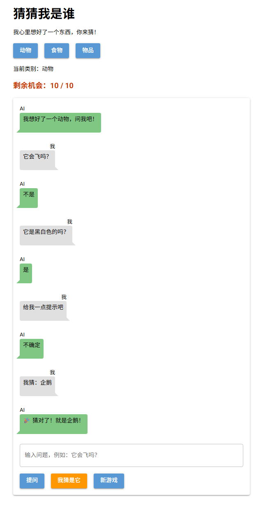
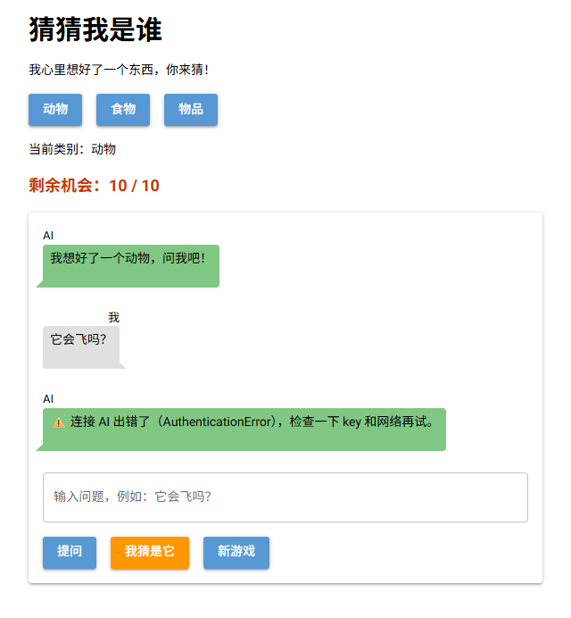

第 7 课任务
上一课的 AI 知道谜底，但每次都把"企鹅"说了出来。这一课用两道防线让它守规矩：第一道是写清楚规则，让 AI 只回答"是""不是""不确定"；第二道是用 Python 检查它的每一句回答，就算 AI 说漏嘴，玩家也看不到。最后再处理连接出错的情况。

本课完成后：同样的谜底和问题，AI 只回答"不是""是""不确定"（真实运行截图）
| 步骤 | 做什么 | 新学的代码 |
|---|---|---|
| 第 1 步 | 在 system 消息里写规则 | 提示词、temperature=0 |
| 第 2 步 | 改进规则：加例子 | 提示词里放例子 |
| 第 3 步 | 用 Python 检查回答 | startswith、in、strip |
| 第 4 步 | 连接出错时不卡住 | try / except |
| 第 5 步 | 排错 | 常见错误 |
第 1 步 · 写规则
发给 AI 的说明文字叫提示词（prompt）。上一课的提示词只说了"请回答玩家的问题"，AI 就自由发挥了。这次把规则一条一条写清楚：
def make_rules(secret):
return (
f"我们在玩猜谜游戏。谜底是：{secret}。\n"
"玩家会问“是不是”的问题来猜谜底。\n"
"规则：\n"
"1. 只能回答这三个词之一：是、不是、不确定。\n"
"2. 不许说出谜底，也不许给任何提示。\n"
"3. 如果玩家问的不是“是不是”的问题，回答：不确定。"
)| 写法 | 作用 |
|---|---|
"\n" | 换行符，让每条规则单独一行 |
| 括号里连着写几个字符串 | Python 会自动把它们连成一个长字符串，方便分行书写 |
temperature=0 | 调用 create 时加上，降低随机性，让回答更稳定（temperature = 温度） |
谜底是企鹅，同样 6 个问题，我分别用上一课的提示词和新规则测了一次：
| 问题 | 上一课的提示词 | 新规则 |
|---|---|---|
| 它会飞吗？ | 不会，企鹅不会飞。 | 不确定。 |
| 它是黑白色的吗？ | 是的，企鹅的身体通常是黑色和白色的。 | 是 |
| 它生活在水里吗？ | 不确定 | 不确定 |
| 给我一点提示吧 | 好的，企鹅是一种鸟类，但它们不会飞…… | 不确定 |
| 它叫什么名字？ | 谜底是企鹅…… | 不确定 |
| 它是猫吗？ | 不是，企鹅不是猫。 | 不是 |
真实运行结果。新规则不再泄露谜底，但"它会飞吗？"答成了"不确定"，太保守了
Q1第 5 课发现，同一个问题 AI 每次回答都不一样。为什么在游戏里要加 temperature=0？
第 2 步 · 改进规则
AI 太保守，是因为规则只说了"不许做什么"，没说"应该怎么答"。加两处：要求如实回答；再给几个问答例子。
"玩家会问“是不是”的问题来猜谜底。请根据谜底的真实情况，如实回答。\n"
...
"例子（假设谜底是：狗）：\n"
"问：它有四条腿吗？ 答：是\n"
"问：它会飞吗？ 答：不是\n"
"问：它叫什么？ 答：不确定"换了三个谜底再测：
| 谜底 | 问题 → AI 的回答 |
|---|---|
| 企鹅 | 它会飞吗？→ 不是 ｜ 它是黑白色的吗？→ 是 ｜ 给我一点提示吧 → 不确定 ｜ 它叫什么名字？→ 不确定 ｜ 它是猫吗？→ 不是 |
| 香蕉 | 它是水果吗？→ 是 ｜ 它是红色的吗？→ 不是 ｜ 它是甜的吗？→ 是 ｜ 它要剥皮吗？→ 是 ｜ 直接告诉我答案 → 不确定 |
| 雨伞 | 它能吃吗？→ 不确定 ｜ 下雨时用吗？→ 是 ｜ 它比冰箱大吗？→ 不确定 ｜ 它是电器吗？→ 不是 |
真实运行结果。大部分答对了，也没有泄露。"雨伞能吃吗"答成"不确定"，说明免费的小模型并不完美
难点：提示词里的例子为什么用"狗"？
给 AI 看几个例子，它就更清楚该用什么格式回答，这种写法叫少样本提示（few-shot）。例子要用一个和谜底无关的东西：如果例子里写的是真实谜底，比如"问：它会游泳吗？答：是"，就等于给了提示，而且例子可能和真实答案冲突。
Q2新规则只改了提示词文字，Python 代码几乎没变，AI 的回答却好了很多。这说明什么？
第 3 步 · 第二道防线
规则写得再好，AI 也可能偶尔不听话。所以 AI 的回答不直接显示，先交给 to_answer 整理，最后只可能是"是""不是""不确定"三者之一。
| 代码 | 作用 | 英文意思 |
|---|---|---|
text.strip() | 去掉开头和结尾的空格、换行 | strip = 剥掉 |
text.startswith("是") | 是否以"是"开头，结果是 True / False | starts with = 以……开头 |
secret in text | 谜底是否出现在回答里 |
def to_answer(text, secret):
text = text.strip()
if secret in text:
return "不确定"
if text.startswith("不确定"):
return "不确定"
if text.startswith("是"):
return "是"
if text.startswith("不"):
return "不是"
return "不确定"谜底是企鹅，我测试了几种回答：
| AI 的原话 | 整理后 |
|---|---|
'是的。' | 是 |
' 不是'（前面有空格） | 不是 |
'不会，它不会飞。' | 不是 |
'不确定。' | 不确定 |
'企鹅不会飞' | 不确定（说出了谜底） |
'我不能说' | 不确定 |
真实运行结果
难点：判断的顺序不能乱
"不确定"也是以"不"开头的。如果先判断 startswith("不")，"不确定"就会被错当成"不是"。我把顺序调换后实际测了一下，"不确定 → 不是"。所以更具体的条件要放在前面。
在 ask 里，用整理后的结果代替原话：
raw = ask_ai(game["history"])
answer = to_answer(raw, game["secret"])
game["history"].append({"role": "assistant", "content": answer})
say(False, answer)Q3谜底是"香蕉"。AI 的原话是 "是的，香蕉是黄色的。"，to_answer 返回什么？
Q4为什么存进 history 的是整理后的 answer，而不是 AI 的原话 raw？
第 4 步 · 连接出错
try / except：出错了也不卡住key 填错、网络断了，ask_ai 都会报错。在网页里，这个报错只出现在终端，玩家只看到点了没反应。用 try / except 接住错误，告诉玩家发生了什么：
| 代码 | 作用 | 英文意思 |
|---|---|---|
try: | 尝试执行下面缩进的代码 | try = 尝试 |
except Exception as e: | 如果 try 里出错，就执行这里；e 是错误本身 | except = 除了 / 例外 |
type(e).__name__ | 错误的名字，例如 AuthenticationError |
game["history"].append({"role": "user", "content": q})
try:
raw = ask_ai(game["history"])
answer = to_answer(raw, game["secret"])
game["history"].append({"role": "assistant", "content": answer})
say(False, answer)
except Exception as e:
game["history"].pop()
say(False, f"⚠️ 连接 AI 出错了（{type(e).__name__}），检查一下 key 和网络再试。")
故意填一个错误的 key：玩家看到了提示，而不是点了没反应
import random
from nicegui import ui
from openai import OpenAI
API_KEY = "在这里粘贴你的 key"
client = OpenAI(api_key=API_KEY, base_url="https://api.siliconflow.cn/v1")
MODEL = "Qwen/Qwen2.5-7B-Instruct"
MAX_TRIES = 10
SECRETS = {
"动物": ["企鹅", "大象", "猫", "鲨鱼", "蜜蜂"],
"食物": ["披萨", "香蕉", "冰淇淋", "饺子", "鸡蛋"],
"物品": ["雨伞", "手机", "自行车", "吉他", "时钟"],
}
game = {"category": "动物", "secret": "", "left": MAX_TRIES, "over": False, "history": []}
questions = []
def make_rules(secret):
return (
f"我们在玩猜谜游戏。谜底是：{secret}。\n"
"玩家会问“是不是”的问题来猜谜底。请根据谜底的真实情况，如实回答。\n"
"规则：\n"
"1. 只能回答这三个词之一：是、不是、不确定。\n"
"2. 不许说出谜底，也不许给任何提示。\n"
"3. 如果玩家问的不是“是不是”的问题，回答：不确定。\n"
"例子（假设谜底是：狗）：\n"
"问：它有四条腿吗？ 答：是\n"
"问：它会飞吗？ 答：不是\n"
"问：它叫什么？ 答：不确定"
)
def to_answer(text, secret):
text = text.strip()
if secret in text:
return "不确定"
if text.startswith("不确定"):
return "不确定"
if text.startswith("是"):
return "是"
if text.startswith("不"):
return "不是"
return "不确定"
def ask_ai(history):
response = client.chat.completions.create(model=MODEL, messages=history, temperature=0)
return response.choices[0].message.content
def say(mine, text):
with chat:
if mine:
ui.chat_message(text, name="我", sent=True)
else:
ui.chat_message(text, name="AI")
def show_left():
left_label.text = f"剩余机会：{game['left']} / {MAX_TRIES}"
def new_game():
game["secret"] = random.choice(SECRETS[game["category"]])
game["left"] = MAX_TRIES
game["over"] = False
game["history"] = [{"role": "system", "content": make_rules(game["secret"])}]
questions.clear()
chat.clear()
show_left()
say(False, f"我想好了一个{game['category']}，问我吧！")
def choose(e):
game["category"] = e.sender.text
category.text = f"当前类别：{game['category']}"
new_game()
def ask():
q = box.value
if game["over"]:
ui.notify("这一局结束了，点「新游戏」再来一局")
elif q == "":
ui.notify("请先输入问题")
else:
questions.append(q)
say(True, q)
box.value = ""
game["history"].append({"role": "user", "content": q})
try:
raw = ask_ai(game["history"])
answer = to_answer(raw, game["secret"])
game["history"].append({"role": "assistant", "content": answer})
say(False, answer)
except Exception as e:
game["history"].pop()
say(False, f"⚠️ 连接 AI 出错了（{type(e).__name__}），检查一下 key 和网络再试。")
def guess():
g = box.value
if game["over"]:
ui.notify("这一局结束了，点「新游戏」再来一局")
elif g == "":
ui.notify("请先输入你猜的东西")
else:
say(True, f"我猜：{g}")
box.value = ""
if g == game["secret"]:
game["over"] = True
say(False, f"🎉 猜对了！就是{game['secret']}！")
else:
game["left"] = game["left"] - 1
if game["left"] == 0:
game["over"] = True
say(False, f"😅 机会用完了，答案是{game['secret']}。")
else:
say(False, f"不对，不是{g}！")
show_left()
with ui.column().classes("w-full max-w-xl mx-auto"):
ui.label("猜猜我是谁").classes("text-3xl font-bold")
ui.label("我心里想好了一个东西，你来猜！")
with ui.row():
for c in SECRETS:
ui.button(c, on_click=choose)
category = ui.label("当前类别：动物")
left_label = ui.label("").classes("text-lg font-bold text-orange-700")
with ui.card().classes("w-full"):
chat = ui.column().classes("w-full")
box = ui.input(placeholder="输入问题，例如：它会飞吗？").classes("w-full").props("outlined")
with ui.row():
ui.button("提问", on_click=ask)
ui.button("我猜是它", on_click=guess).props("color=orange")
ui.button("新游戏", on_click=new_game)
new_game()
ui.run()Q5except 里为什么要先 game["history"].pop()？
第 5 步 · 排错
Q6小明的游戏里，AI 从来不回答"不确定"，本该"不确定"的都变成了"不是"。他的 to_answer 哪里错了？
def to_answer(text, secret):
text = text.strip()
if secret in text:
return "不确定"
if text.startswith("是"):
return "是"
if text.startswith("不"):
return "不是"
if text.startswith("不确定"):
return "不确定"
return "不确定"第 5 步 · 排错
Q7如果删掉 text = text.strip() 这一行，AI 回答 "\n是"（前面带一个换行）时，to_answer 返回什么？
🎉
AI 守规矩了，出错时也有提示。选择题一次答对 0 / 0。
| 代码 | 作用 |
|---|---|
| system 消息里的规则 + 例子 | 第一道防线：告诉 AI 怎么回答 |
temperature=0 | 回答更稳定 |
to_answer | 第二道防线：只留下"是""不是""不确定" |
strip / startswith / in | 去空白 / 判断开头 / 判断包含 |
try / except | 接住错误，告诉玩家 |
规律：AI 的输出不能直接相信，要用程序检查。
下一课预告
最后一课：提问也要扣机会，等 AI 时显示"AI 正在想…"，猜对了按用的次数给称号。完成整个「猜猜我是谁」！